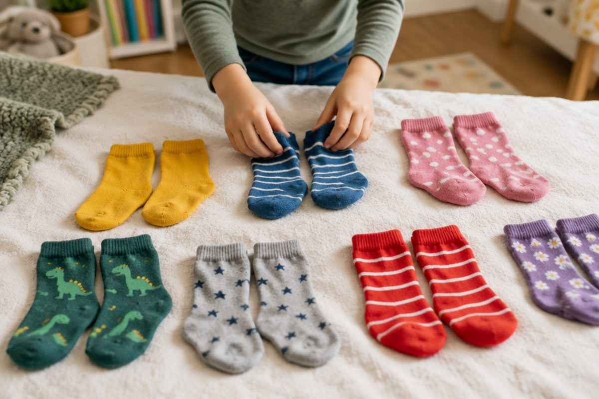

전체 단원 › 2학년 1학기 › 수학 › 곱셈 기초(2단·5단)
2씩, 5씩 묶어 세면 곱셈이 돼요!

양말은 2짝이 한 켤레, 손 하나에는 손가락이 5개예요. 같은 수씩 묶어 세면 곱셈이 돼요.
같은 수씩 묶어 세요
하나씩 세면 오래 걸려요.
2씩, 5씩 뛰어 세면 빨라요.
→ 2, 4, 6 / → 5, 10
몇의 몇 배
2씩 3묶음은 2의 3배예요.
2의 3배는 2 + 2 + 2 = 6이에요.
→ 2씩 3묶음 → 2의 3배 → 6
곱셈식으로 써요
2의 3배를 2 × 3 = 6이라고 써요.
'2 곱하기 3은 6과 같아요'라고 읽어요.
2 × 3 = 6 은 2 + 2 + 2 = 6과 같아요. 5 × 3 = 15 는 5 + 5 + 5 = 15와 같아요.
이렇게 풀어요: 2단과 5단
2단은 2씩 커져요.
5단은 5씩 커지고, 끝자리가 5와 0으로 번갈아 나와요.
2단: 2×1=2, 2×2=4, 2×3=6, 2×4=8, 2×5=10, 2×6=12, 2×7=14, 2×8=16, 2×9=18 / 5단: 5×1=5, 5×2=10, 5×3=15, 5×4=20, 5×5=25, 5×6=30, 5×7=35, 5×8=40, 5×9=45
핵심 낱말
- 묶어 세기
- 같은 수씩 묶어서 뛰어 세는 것
- 몇의 몇 배
- 같은 수를 몇 번 더한 것(2의 3배 = 2 + 2 + 2)
- 곱셈(×)
- 같은 수를 여러 번 더한 것을 간단히 나타내는 계산
- 곱셈구구
- 1부터 9까지 곱한 값을 차례로 정리한 것(2단, 5단……)
한 줄 정리
- 같은 수씩 묶어 세면 빨라요.
- 2의 3배는 2 + 2 + 2이고, 2 × 3 = 6으로 써요.
- 2단은 2씩, 5단은 5씩 커져요.
학교 교육과정 연결
- [2수01-10] 곱셈이 이루어지는 실생활 상황과 연결하여 곱셈의 의미를 이해한다.
- [2수01-11] 곱셈구구를 이해하고, 한 자리 수의 곱셈을 할 수 있다.